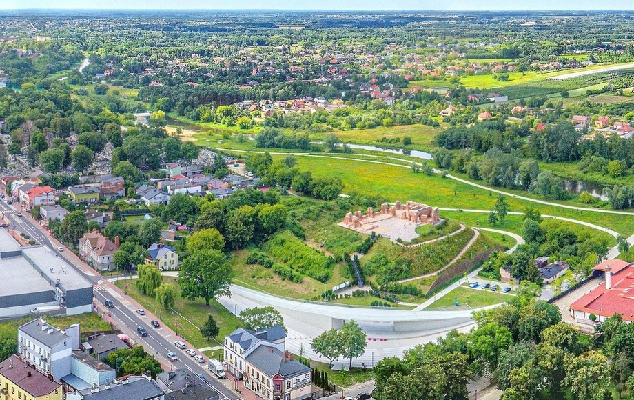

O mnie
Nazywam się Szymon Grzelak i jestem programistą. Specjalizuję się w
tworzeniu stron internetowych, ale również tworzę hobbystycznie gry
w silniku Unity. Moje projekty obejmują zarówno sklepy internetowe,
jak i gry komputerowe.
Tworzę gry w silniku Unity od 2021 roku
pracując zarówno samodzielnie, jak i w zespołach.
W mojej
pracy stawiam na jakość i dopracowanie wszystkich detali. Wierzę, że
żeby stworzyć coś dobrego wystarczy poświęcić czas na dopracowanie
każdego elementu projektu.
